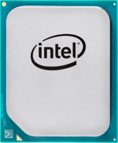

Процессор Intel Atom C3338R

Описание товара
Intel Atom C3338 - 2-ядерный процессор с тактовой частотой 1500 MHz и кэшем 2-го уровня 4096 KB.
Характеристика товара
- Количество производительных ядер: 2
- Максимальное число потоков: 2
- Техпроцесс: 14 нм
- Базовая частота процессора: 1,80 ГГц
Цена: 3 499,00 Р
Подробное описание товара
Intel Atom C3338 - 2-ядерный процессор с тактовой частотой 1500 MHz и кэшем 2-го уровня 4096 KB. Процессор предназначен для серверов, разъем - BGA1310. Имеет встроенный контроллер оперативной памяти (2 канала, DDR4-1866) и контроллер PCI Express 3.0 (количество линий - 12).